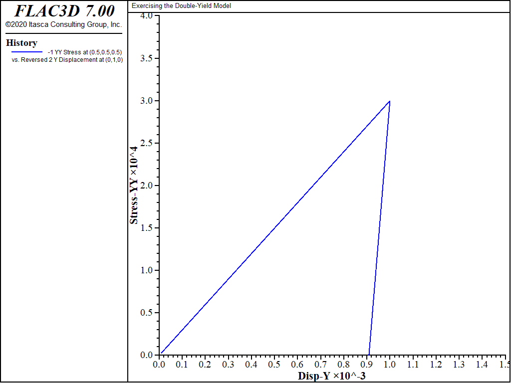

采用双屈服模型的各向同性固结试验
注意
要在 FLAC3D 中查看此项目，请使用菜单命令 。 选择“ConstitutiveModels/ IsotropicCompressionDoubleYield”并选择“IsotropicCompressionDoubleYield.f3dprj”以加载。 该项目的主数据文件见本示例末尾（main data file）。
为确保输入参数合理，使用 FLAC3D 进行单网格单元试验，在与物理试验相似的应力路径上检验双屈服模型，并绘制相似的图形。
作为示例，数据文件（data file）针对一种卸载响应比加载响应刚十一倍的材料检验了 双屈服模型（double-yield model）。
需要重写指向其他主题中公式的链接——现状不便使用。
物理试验中观测到的加载切线模量 \(dp/de\) 为常数，等于 10 MPa。 卸载段的斜率对应于 \(K_c\) = 110 MPa。 为确定数值模型的体积特性，我们将这些值代入 \(R\) 上的公式（the equation），得到 \(R\) = 10。 从 \(dp_c / de^p\) 上的公式（the equation）可以看出， 硬化曲线具有恒定斜率，对应于 \(dp_c/de^p = h\) = 11 MPa。 硬化表由此结果导出， 假定无超固结。
请注意，最大体积模量的输入值 \(K_{max}\) 必须大于 \(K_c\) （见 \(dp_c / de^p\) 上的公式（the equation））。 输入的剪切模量控制 \(G_{max}/K_{max}\) 的比值。在本例中，
而泊松比为
数值试验结果示于 图 1（Figure 1） 的负竖向应力与负竖向应变关系图中。 加载斜率为 10 MPa，卸载斜率为其十一倍，符合预期。


图 1：卸载刚度是加载刚度十一倍的单网格单元试验。
最大弹性模量 \(K_{max}\) 和 \(G_{max}\) 应按模型中可能产生的最大压力来估算。不应将它们设得更大， 因为 FLAC3D 会基于这些模量进行质量缩放（以获得稳定的时步）；将它们设得过高会导致响应迟缓（例如，模型可能收敛到稳态解的速度很慢）。弹性模量还起到塑性模量上限的作用。
如果要模拟的材料经历过一定的初始压密（即处于超固结状态），则可将 \(p_c\) 设为该先期固结压力。
在这种情况下，还必须设置 \(e^{p}\)，使其与 \(p_c\) 及给定表格一致（使用 设置网格单元属性（zone property） 塑性体积应变（strain-volumetric-plastic） 设置 \(e^{p}\)）。
数据文件
IsotropicCompressionDoubleYield.dat
; 采用双屈服模型的各向同性压缩算例
model new
model large-strain off
fish automatic-create off
model title "Exercising the Double-Yield Model"
zone create brick size 1 1 1
zone cmodel assign double-yield
zone property bulk-maximum 1110e6 shear-maximum 507.7e6 ...
table-pressure-cap 1 multiplier 10
zone property density 1000 cohesion 1e10 tension 1e10
table '1' add (0,0) (1,1.1e7)
zone face apply velocity-x 0 range position-x 0
zone face apply velocity-y 0 range position-y 0
zone face apply velocity-z 0 range position-z 0
zone face apply velocity-x -1e-6 range position-x 1
zone face apply velocity-y -1e-6 range position-y 1
zone face apply velocity-z -1e-6 range position-z 1
zone history stress-yy position (0.5,0.5,0.5)
zone history displacement-y position 0 1 0
model step 1000
zone face apply velocity-x 1e-7 range position-x 1
zone face apply velocity-y 1e-7 range position-y 1
zone face apply velocity-z 1e-7 range position-z 1
model step 1600
⇐ Uniaxial Compressive Strength of a Jointed Material Sample | Isotropic Consolidation Test with Modified Cam-Clay Model ⇒
| 这些内容对您有帮助吗？… | FLAC3D © 2019, Itasca | 原文更新于 2020 年 10 月 8 日 |